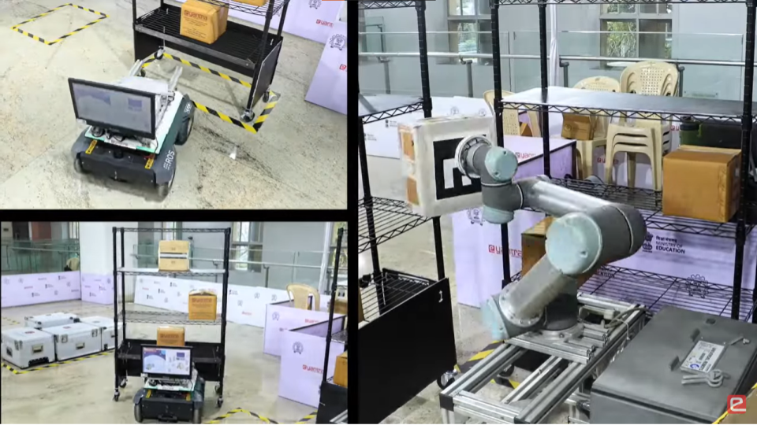
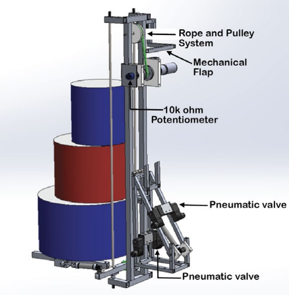

|
Archit Jain I'm an incoming Fall '25 Master's student at the University of Washington. I build robotic systems that reason, adapt, and act — solving non-trivial problems in messy real world. My interests lie in autonomy, control, and learning, with a particular excitement for robots that move through space (mobile robots, quadrupeds, humanoids) and make sense of it along the way. Currently, I'm working as a Robotics Engineer at Kalyani Group, developing autonomy stacks for quadrupeds and humanoids. Before this, I spent a year at the ERTS Lab, IIT Bombay, as a Project Assistant under Prof. Kavi Arya. I bring a grounded engineering background (Bachelors in Production Engineering from VIT Pune) and got my start in robotics by building and breaking things — custom actuators, humanoids, drone middleware. Some of these led to podium finishes at the Smart India Hackathon and ABU Robocon; others ended in flying gears and burned stepper motors. Aside from robotics, I enjoy swimming and hiking. Checkout my Bio to know more about my past life! |
{kind=link}
News
|
ResearchI am interested in how robots perceive and navigate complex, unfamiliar 3D environments. While humans effortlessly make sense of cluttered scenes, uneven terrain, and dynamic obstacles — often with partial information — robotic systems still struggle to match this adaptability. What representations, feature identifications and system architectures allow robots to extract actionable understanding from noisy, incomplete data? How can physical interaction and perception be tightly coupled so that robots can not only move through the world but reason about it as they go? |

|
Scalable and low-cost remote lab platforms: Teaching industrial robotics using open-source tools and understanding its social implicationsAmit Kumar, Jaison Jose, Archit Jain, Siddharth Kulkarni, Kavi AryaInternational Conference on Social Robotics (ICSR), 2024 springer / arXiv
With recent advancements in industrial robots, educating students in new technologies and preparing them for the future is imperative. However, access to industrial robots for teaching poses challenges, such as the high cost of acquiring these robots, the safety of the operator and the robot, and complicated training material. This paper proposes two low-cost platforms built using [...] |
Exploring Algorithm for Grasping Unknown Objects using Two Finger GripperArchit Jain, Gokul M K, Jaison Jose, Ravikumar Chaurasia, Kavi AryaERTS Lab, CSE IIT Bombay, 2023 paper / poster
In a research project at IIT Bombay, the objective was to significantly enhance the grasping capabilities of the two-finger gripper robotic arm (such as the UR5 arm) by leveraging a combination of learning and analytical-based algorithms. The focus is on enabling the arm to effectively grasp and manipulate unknown objects with minimal prior knowledge or specific object information [...] |
|
Generating 3D Point Cloud Data using 2D LiDAR Sensor with ROSArchit Jain, Mihir Trivedi, Deepak JaiswalKalyani Technologies Ltd., 2022 paper / video
In a research project at Kalyani Group, this paper describes an algorithm that performs 3D scanning with the help of 2D Light Detection And Ranging (LiDAR) sensor using Robot Operating System (ROS). Using a 2D 360 degree LiDAR we get a LaserScan data in 2D plane. To convert this 2D LiDAR into 3D scanned point cloud data, an additional physical third axis (Z axis) is used for collecting laserscan data in third dimension [...] |
Other Interesting ProjectsI have been working on different robotics projects leading towards autonomy. These projects have been development during my internships, workplace, college and competition times. |
Real-Time 3D Autonomous Navigation and Interoperable Control Systems for Factory-Deployed Legged and Wheeled RobotsKalyani Group, Pune, IN, 2024-25poster / image / video / presentation At Kalyani Group, I have developed full-stack autonomy solutions for ground-based robotic platforms including quadrupeds (unitree go2, b2), humanoids (untiree g1), and customized wheeled mobile robots. My work spans the perception-to-control pipeline, with a focus on real-time autonomy, fleet interoperability, and architecture design for robust communication system. I have developed modular autonomy stack with 3D LiDAR-Inertial Odometry (LIO) mapping & localization, along with multi-terrain navigation for indoor, semi-structured and shop floor factory environments. Built and deployed Hardware Abstraction Layers (HAL) for heterogeneous robotic platforms to ensure portability across actuator/sensor configurations and standardize control interfaces. Designed multi robot communication architecture to connect fleet of robots through a dashboard and enable remote mission dispatch, health monitoring, and state feedback. Additionally, designed a fleet management system capable of multi-robot coordination, monitoring, and remote control — supporting real-time interoperability between multiple ground units in shared environments. |
Collaborative Mobile Manipulation for Autonomous Warehouse Sorting - eYRC 2023-24 Theme DevelopmentAmit Kumar, Jaison Jose, Archit Jain, Siddharth Kulkarni, Kavi AryaeYantra - IIT Bombay, Mumbai, IN, 2023-24 video / code / arXiv Designed and developed the “Cosmo Logistic” theme for the e-Yantra Robotics Competition (eYRC) 2023-24, conducted by IIT Bombay. The project involved the integration of a mobile robot and a UR5 robotic arm to autonomously sort and prepare packages in a simulated inter-planetary warehouse environment. As the theme developer, I engineered the complete pipeline — from autonomous navigation and object localization to coordinated manipulation. Implemented a ROS 2-based system combining SLAM for localization, the Nav2 stack for navigation, and MoveIt for motion planning and manipulation. The system was first validated in the Gazebo simulator and later deployed on physical hardware at IIT Bombay for end-to-end testing. This theme was designed for national-level deployment, enabling students across India to solve advanced mobile manipulation problems using a realistic robotics stack. |

|
 |
Autonomous BVLOS Drone Mission Platform - Middleware Development for Enterprise Drone Software PlatformFlytbase Labs, CA, USA, 2023video / website In an internship at FlytBase Labs, I contributed towards the development of an autonomous drone operations platform for Beyond Visual Line of Sight (BVLOS) missions. Focused on designing middleware components deployed on edge devices embedded in drones for reliable long-range, real-time communication and control. Developed micro-services for autonomous waypoint navigation, failsafe execution, and health monitoring, communicating over MQTT and integrated with FlytBase’s cloud platform. Implemented mission planning modules using MAVROS and PX4 APIs, enabling real-time trajectory updates and mission re-routing. Designed robust recovery mechanisms including battery-critical RTL (Return-to-Launch), GPS loss detection, and failsafe state transitions via action servers and service clients. Contributed to the full stack — from on-board firmware interaction to high-level service orchestration — enabling globally accessible drone fleet control for applications in logistics, surveillance, and industrial monitoring. |
High-Torque Compact Actuator Design for Robotic Arm JointsKalyani Technologies, Pune, IN, 2022video / images Designed and fabricated a compact, high-torque actuator for robotic arms operating under heavy-load conditions. The actuator integrates a NEMA-17 stepper motor coupled with a 10:1 custom gear reduction system, achieving a peak torque output of 42 kg·cm at the elbow joint. The system was optimized for minimal footprint and mechanical efficiency through torque transmission analysis, backlash minimization, and bearing load evaluations. Housing and gear components were modeled in SolidWorks and fabricated using aluminum alloy for strength-to-weight optimization. This actuator provides a modular solution for precision-controlled joint motion in industrial and research-grade robotic manipulators. |

|
Perception-Driven Control Architecture for High-Speed Autonomous Robotics - ABU Robocon 2022The Robotics Forum, VIT Pune, IN, 2022paper / video / images Designed and developed two semi-autonomous robot systemas, part of the DD National ABU Robocon 2022 Robotics Challenge. The competition theme required multi-robot coordination to complete complex, time-sensitive tasks involving precise navigation, object manipulation, and real-time strategy execution. Led the software architecture for the autonomous robot, focusing on robust low-level motion control, multi-sensor data fusion, and reactive state-based behavior planning. Implemented high-frequency control loops for 3-wheeled omni drives using PID and feedforward velocity control. Integrated encoder and IMU data through a complementary filter for odometry estimation, with fallback localization via vision-based trained object model tracking. Designed finite state machines (FSMs) for task sequencing and time-critical transitions, enabling real-time adaptability during match scenarios with sub-50 ms control latency. |

|
 |
Compact Actuation and Kinematic Design for Dexterous Humanoid Upper Body MotionInsignia Machining, Pune, IN, 2021video / images Led the mechanical design of a humanoid robot's upper body with a focus on precision actuation and compact form factor. Developed a 2-DOF parallel manipulator for neck movement, capable of ±30° pitch and ±45° yaw with sub-degree repeatability. Designed custom linear actuators for the shoulder joint using a 10:1 gear reduction system. Performed detailed gear train calculations, load analysis, and actuator sizing to ensure smooth motion under varying load conditions. Created fully dimensioned 2D manufacturing drawings using SolidWorks, incorporating GD&T and tolerances within ±0.05 mm for CNC milling and laser-cut profiles. The system was fabricated using aluminum for structural components and PLA for non-load-bearing 3D printed parts. The project aimed to improve humanoid upper body dexterity through optimized actuator placement and precise kinematic control. |

|
|
website adapted from here |